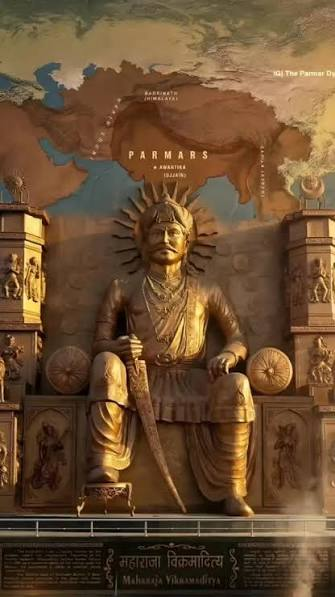
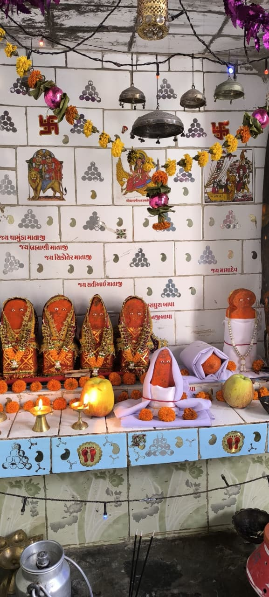
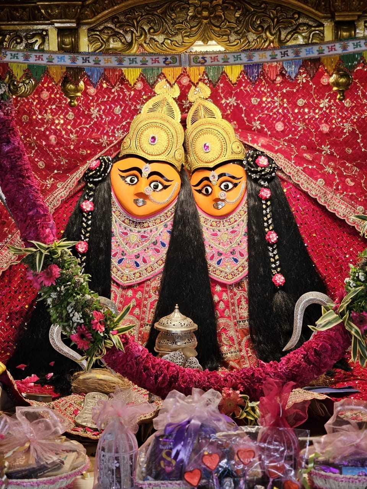
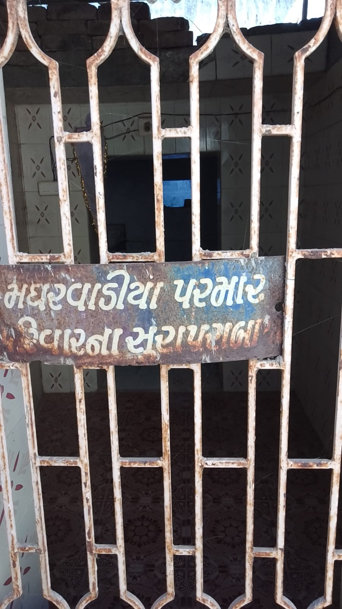
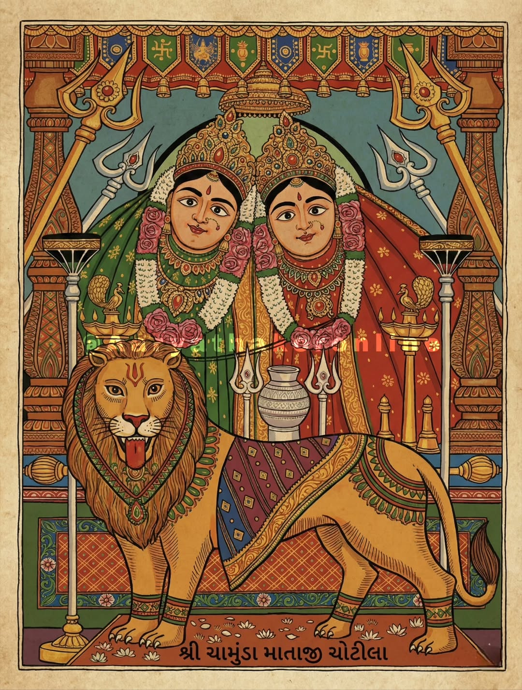

પરિવારનો ઇતિહાસ
History of Magharvadiya Parmar Family
આપણા પૂર્વજોનો ગૌરવશાળી વારસો અને ઐતિહાસિક સફર
આપણા પૂર્વજોનો ગૌરવશાળી વારસો અને ઐતિહાસિક સફર
PARMAR DYNASTY

શાંતિથી સાંભળજો સાહેબ... આજે હું તમને એ અસલી ઈતિહાસ સંભળાવવા આવ્યો છું, જે સાંભળી તે ગમે તેવા સિંહ જેવા મર્દના પણ રુંવાડા ઉઠી થાય. આ વાર્તા કોઈ સામાન્ય રાજા-મહારાજાની નથી, પણ પૃથ્વી પર ધર્મના અસ્તિત્વને બચાવનારા મહાન અગ્નિવંશી ક્ષત્રિય પરમારની છે.
એક સમય એવો હતો જયારે આ પૃથ્વી પર કુર રાક્ષસો અને અસુરોનો અનારાયાય હદ બહાર વધી ગયો હતો. સાધુ-સંતો, ત્રઋષિમુનિઓ અને પવિત્ર બ્રાહ્મણો દિવસ-રાત પ્રભુની આરાધના કરતા, યજ્ઞો કરતા, પણ એ રાક્ષસો આવીને યજ્ઞો અપવિત્ર કરી નાખતા. બ્રાહ્મણો પોતાની પાસે કોઈ શસ્ત્ર ન હોવાને કારણે લાચાર બન્યા હતા, તેઓ ધર્મ અને પોતાની જાતને બચાવી શકતા નહોતા. ધરતી માતા પ્રાસી ગઈ હતી અને ચારેય તરફ હાહાકાર મચી ગયો હતો.
ત્યારે... અધર્મના એ કાળી રાત જેવા અંધકારને ચીરવા માટે, મહર્ષિ વસિષ્ઠે આબુ પર્વત પર એક ભવ્ય અને મહાપવિત્ર અગ્નિકુંડ તૈયાર કર્યું. દેવોના આહવાન સાથે યજ્ઞ શરૂ થયો. એ પવિત્ર અગ્નિકુંડની ભભુકતી જવાળાઓમાંથી ચાર મહાન ક્ષત્રિય વંશોની પ્રગતિ થઈ! પ્રતિહાર, ચૌહાણ અને ચાલુક્ય પ્રગટ થયા, પણ રાક્ષસોના કાળ તરીકે જે ચોથો મહાવીર પુરુષ બહાર આવ્યો... એ બીજે કોઈ નહીં, પણ આપણો મૂળ પુરુષ હતો!
એ વીર પુરુષ જેવો અગ્નિકુંડમાંથી બહાર નીકળ્યો, એના હાથમાં ચમકતી તલવાર હતી, આંખોમાં અંગારા હતા અને એના મુખમાંથી પહેલો લલકાર જ એ નીકળ્યો હતો - "પર માર! પર માર!" એટલે કે "શત્રુને કાપી નાંખ, શત્રુનો નાશ કર!" અગ્નિકુંડમાંથી નીકળતાની સાથે જ જેના મુખેથી આ શબ્દો નીકળ્યા, એના એ જ પરાક્રમી શબ્દો પરથી મહર્ષિ વસિષ્ઠે એનું નામ "પરમાર" રાખ્યું!
એ પછી હાથમાં નગ્ન તલવાર લઈને એ પરમાર વીરે પૃથ્વી પરના દરે-એક રાક્ષસને વીણી-વીણીને કાપવાનું શરૂ કર્યું. ધર્મના દુશ્મનોનો જડમૂળથી વિનાશ કરી નાખ્યો અને રક્તની નદીઓ વહાવી દીધી. બ્રાહ્મણોની રક્ષા કરી, યજ્ઞો પવિત્ર કર્યા અને ધરતી પર ફરીથી ધર્મનું સ્થાપન કર્યું.
જે વંશની ઉત્પત્તિ જ બ્રાહ્મણોના આશીર્વાદ, ઋષિઓના તપ અને મુખમાંથી નીકળેલા "પર માર" ના લલકારથી થઈ હોય, એ વંશના લોહીમાં ખુમારી તો જન્મથી જ હોય ને સાહેબ! પેઢીઓ વીતી ગઈ, યુગો બદલાઈ ગયા, પણ આપણી રગેરગમાં વહેતું એ અગ્નિકુંડનું લોહી અને ધર્મ કાજે મરી ફીટવાની ખુમારી આજે પણ એવી જ જીવંત છે...
ગર્વથી કહો...
અમે એ જ ક્ષત્રિય પરમાર છીએ!
MAGHARVADIYA BRANCH

'મઘરવડિયા' નામ સામાન્ય રીતે કોઈ પૂર્વજ અથવા જે-તે સમયે વસવાટ કરેલા ગામ (જેમ કે 'મઘરવાડા' અથવા તેને મળતા નામનું ગામ) પરથી ઉતરી આવ્યું હોવાનું મનાય છે.
તમે ક્ષત્રિય પરંપરા મુજબ મા ચામુંડા ને પૂજો છો. જૂનાગઢ (સોરઠ) વિસ્તારમાં પરમારોનો ઇતિહાસ ખૂબ જૂનો છે, જેમાં મૂળીના પરમારો અને અન્ય શાખાઓનો સમાવેશ થાય છે.
સામાન્ય રીતે તમારી જ્ઞાતિમાં 'પરમાર' અટક ધરાવતા અન્ય પરિવારો સાથે લગ્ન થતા નથી (કારણ કે તે એક જ કુળ ગણાય), પરંતુ અન્ય રાજપૂત કુળો (જેમ કે ચૌહાણ, સોલંકી, વાઘેલા વગેરે) માં સગપણ કરવામાં આવે છે.
GOTRA & CLAN INFORMATION
OUR KULDEVI - SHREE CHAMUNDA MAA

ગુજરાતના સુરેન્દ્રનગર જિલ્લાના ચોટીલા ખાતે આવેલું ચામુંડા માતાજીનું મંદિર (Chamunda Mata Temple, Chotila) એ હિન્દુ ધર્મમાં અત્યંત પવિત્ર અને જાગ્રત શક્તિપીઠ છે. ૧,૧૭૩ ફૂટ ઊંચી પહાડી પર બિરાજમાન માતાજીના આ સ્વરૂપની મહિમા, ઇતિહાસ અને માન્યતાઓ અદભુત છે.
ચોટીલા મંદિરનું સંચાલન શ્રી ચામુંડા માતાજી ડુંગર ટ્રસ્ટ દ્વારા થાય છે. અહીં પહોંચવા માટે ગુજરાતના રાજકોટ-અમદાવાદ હાઇવે પરથી સરળતાથી સડક માર્ગ દ્વારા પહોંચી શકાય છે.
JUNAGADH (SORATH) REGION

ક્ષત્રિય પરંપરા મુજબ, રાજપૂતોની અટક કે શાખ મોટાભાગે તેમના મૂળ ગામ અથવા કોઈ પ્રતાપી પૂર્વજના નામ પરથી પડતી હોય છે.
'મઘરવડિયા' શાખનો સીધો સંબંધ જૂનાગઢ જિલ્લાના જ મઘરવાડા (Magharwada) ગામ સાથે જોડાયેલો છે. વર્ષો પહેલા તમારા પૂર્વજો આ ગામમાં સ્થાયી થયા હશે અથવા ત્યાંથી સ્થળાંતર કરીને શાપુર કે અન્ય ગામોમાં વસ્યા હશે, તેથી તમે 'મઘરવડિયા' તરીકે ઓળખાયા.
પરમારોનું ગુજરાતમાં સૌથી મોટું રાજ્ય મૂળી (સુરેન્દ્રનગર) હતું. પરંતુ જૂનાગઢ અને ગીર પંથકમાં પણ પરમારોની અનેક જાગીરો અને ગામો આવેલા છે.
મઘરવડિયા પરમારો આ વિસ્તારના મૂળ ક્ષત્રિયો છે જેમણે ખેતી અને પશુપાલન સાથે શૌર્યની પરંપરા જાળવી રાખી છે.
તમારા કુળની સૌથી સચોટ અને ૧૦-૧૫ પેઢી સુધીની વિગતો તમારા બારોટ (વહીવંચા) પાસે હોય છે.
દરેક જ્ઞાતિના બારોટ પાસે એક 'પોથી' હોય છે જેમાં તમારા પૂર્વજોના નામ, તેઓ કયા ગામથી ક્યારે આવ્યા અને તેમની જમીન-જાગીરની તમામ નોંધ હોય છે.
FAMILY GENEALOGY

હાલ માં વંશાવલી ની કોઈ માહિતી મારી પાસે ઉપલબ્ધ નથી.
ભવિષ્યમાં અમારા પરિવારની વંશાવળી અંગેની માહિતી ઉપલબ્ધ થશે ત્યારબાદ આ વિભાગમાં સંપૂર્ણ વિગતો ઉમેરવામાં આવશે.